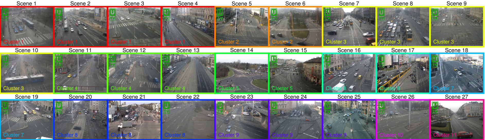
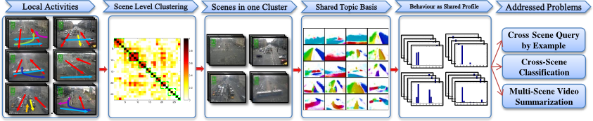
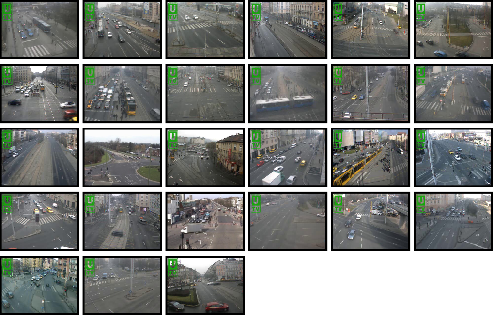
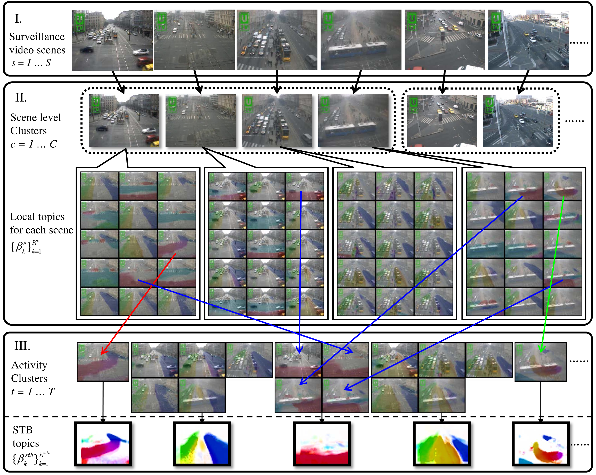

Discovery of Shared Semantic Spaces for Multi-Scene Video Query and Summarization
Xun Xu, Timothy Hospedales and Shaogang Gong
Queen Mary, University of London
Downloads: [PDF] [Supplemntary] [Slides] [Dataset Introduction] [QMDTS Dataset] [Annotations]
Introduction
The growing rate of public space CCTV installations has generated a need for automated methods for exploiting video surveillance data including scene understanding, query, behaviour annotation and summarization. For this reason, extensive research has been performed on surveillance scene understanding and analysis. However, most studies have considered single scenes, or groups of adjacent scenes. The semantic similarity between different but related scenes (e.g., many different traffic scenes of similar layout) is not generally exploited to improve any automated surveillance tasks and reduce manual effort.

Exploiting commonality, and sharing any supervised annotations, between different scenes is however challenging due to: Some scenes are totally un-related -- and thus any information sharing between them would be detrimental; while others may only share a subset of common activities -- and thus information sharing is only useful if it is selective. Moreover, semantically similar activities which should be modelled together and shared across scenes may have quite different pixel-level appearance in each scene. To address these issues we develop a new framework for distributed multiple-scene global understanding that clusters surveillance scenes by their ability to explain each other's behaviours; and further discovers which subset of activities are shared versus scene-specific within each cluster. We show how to use this structured representation of multiple scenes to improve common surveillance tasks including scene activity understanding, cross-scene query-by-example, behaviour classification with reduced supervised labelling requirements, and video summarization. In each case we demonstrate how our multi-scene model improves on a collection of standard single scene models and a flat model of all scenes.

Queen Mary Multi-Camera Distributed Traffic Scenes Dataset (QMDTS) 
The Queen Mary Multi-Camera Distributed Traffic Scenes Dataset (QMDTS) was collected to facilitate the study of transfer learning models for video semantic content analysis and summarisation. This dataset consists of surveillance video footage from 27 distributed and disjoint camera views of busy traffic scenes in urban environments. This dataset includes two existing traffic scene datasets: QMUL Junction Dataset and QMUL Roundabout Dataset and a brand new 25 traffic scenes collected from urban environment. We release a trimmed train/test raw videos for all of the 27 scenes, named Queen Mary Multi-Camera Distributed Traffic Scenes Dataset (QMDTS) along with the reference annotation for 6 scenes. An introduction to the dataset and annotations is recommended for properly using the data.

Multi-Layer Clustering
We addressed how to discover related scenes and learn shared topics/activities across multiple scenes. At the scene level we group related scenes according to activity correspondence (Section IV-A); within each scene cluster we further compute a shared activity topic basis so that all activities within that cluster are expressed in terms of the same set of topics (Section IV-B).
Demo
Dataset Introduction
27 urban traffic scenes grouped into 11 clusters by our algorithm
Multi-Scene Profiling
Profile traffic behaviours by a shared activity topic basis.
Cross Scene Query
Given query example search for related behaviours in other scenes.
Multi-Scene Summarization
Summarize representative behaviours in a group of scenes to minimize redundancy.
Citation
-
Discovery of Shared Semantic Spaces for Multi-Scene Video Query and Summarization PDF Supplementary [In Print]
Xun Xu, Timothy Hospedales and Shaogang Gong
IEEE Transactions on Circuits and Systems for Video Technology, 2015